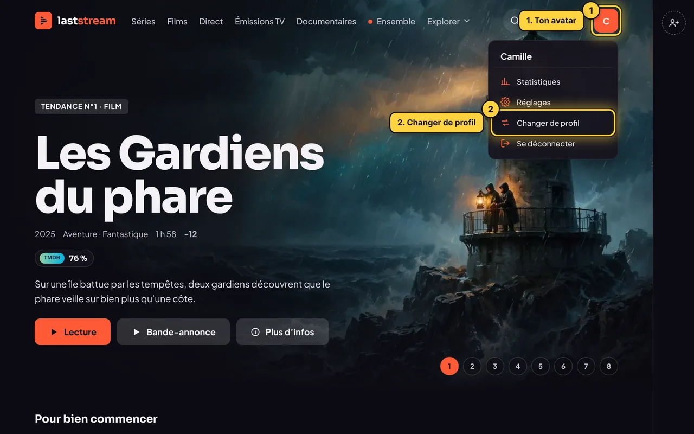
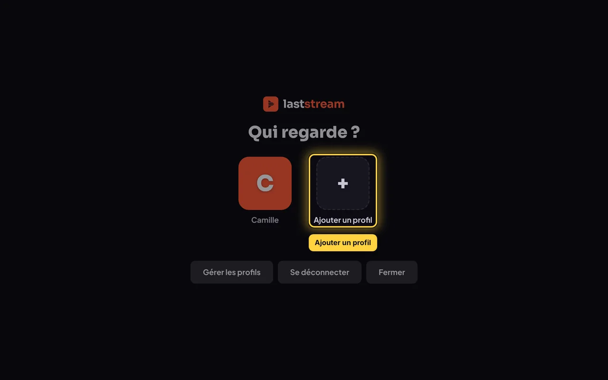
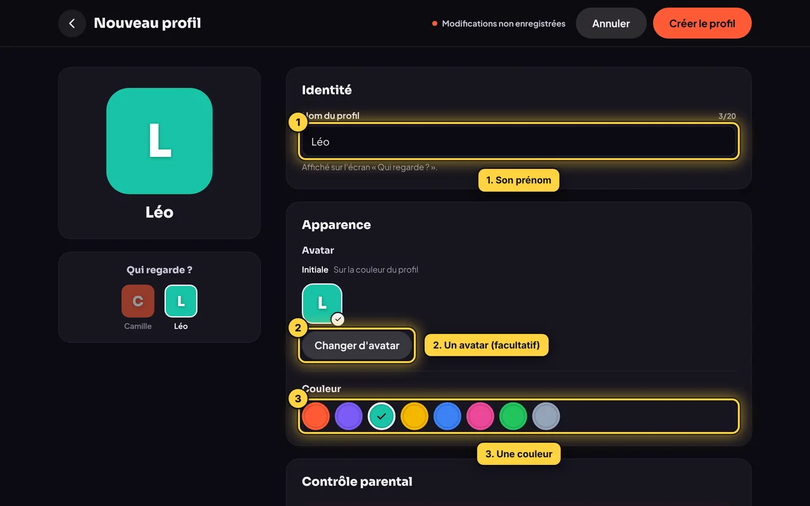
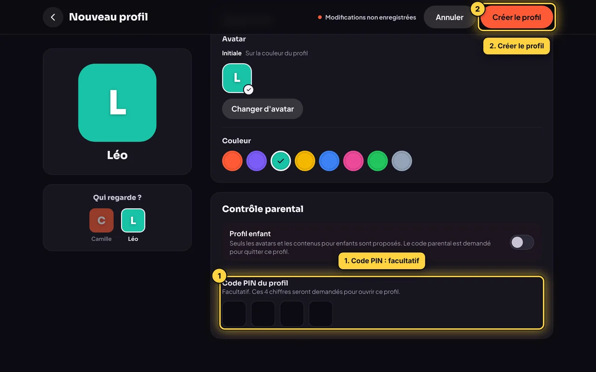
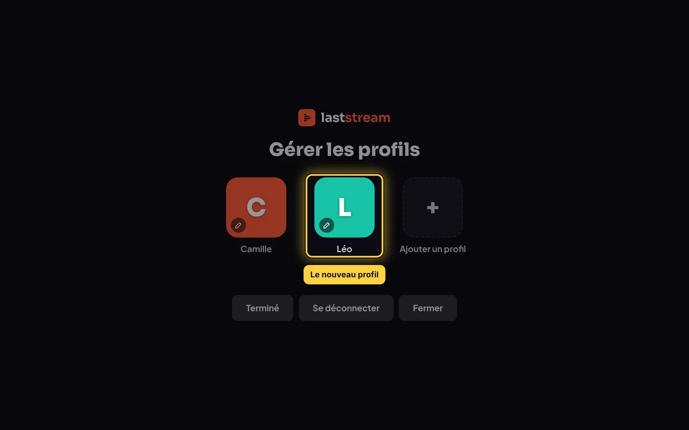

Prérequis
- Un compte connecté.
- Seul le profil principal (ou quelqu’un qui connaît son code) peut ajouter des profils.
Étapes
Sur chaque capture, le cadre jaune montre où toucher ou cliquer ; les numéros donnent l’ordre.
-
Touche ton avatar en haut à droite (1), puis « Changer de profil » (2).

-
Sur l’écran « Qui regarde ? », touche la case « Ajouter un profil ».

-
Dans « Nouveau profil », saisis son prénom (1, 20 caractères maximum). Choisis si tu veux un avatar avec « Changer d’avatar » (2), puis une couleur parmi les 8 pastilles (3).

-
Facultatif : un « Code PIN du profil » de 4 chiffres (1), demandé ensuite pour ouvrir ce profil.
Touche « Créer le profil » en haut à droite (2).

-
Le nouveau profil apparaît à côté des autres. Touche « Terminé » pour revenir à « Qui regarde ? », puis touche le profil pour l’ouvrir.
